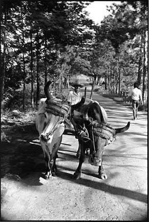
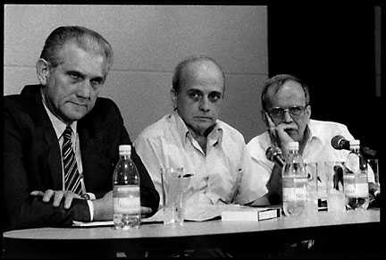
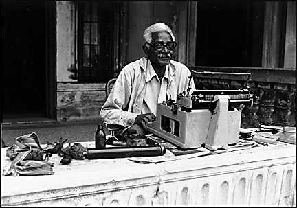
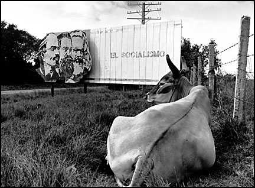
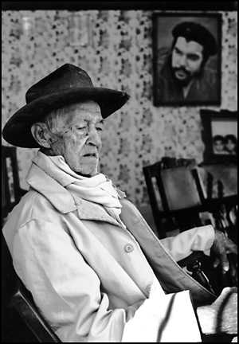

Photos by Martin Mraz

On the outskirts of the town of Viñales, in the Province of Pinar del Rio.

Cuban National Assembly member Ricardo Alarcon (R) with other officials
at the February 26, 1997 press conference following the downing
of two American planes by the Cuban Air Force.

Typewriter repairman, La Habana, December 1993.

This unique billboard was found in the Trinidad province.

Taken in the town of Trinidad, January 1994.
Back to the Photo Tour